Purificadores
LINEA SINIOR

Descripcion
Reducción sustancial del cloro, subproductos de la desinfección (SPDs), pesticidas, contaminantes orgánicos, sólidos en suspensión. Disminución de metales pesados. Control bacteriostático
LINEA SINIOR 4

Descripcion
PSA Senior 4 es la evolución en tu cocina: agua purificada y segura para beber, cocinar y lavar alimentos. Estética totalmente renovada, con tamaño más compacto y el nuevo Fipor® n°.3, con mayor superficie filtrante. Más sustentable: estuche compostable, caja de accesorios y Kit Posventa en cartón reciclable. Línea Senior 4 autorizada por la ANMAT, perteneciente al Ministerio de Salud de la Nación Argentina
PSA VERO
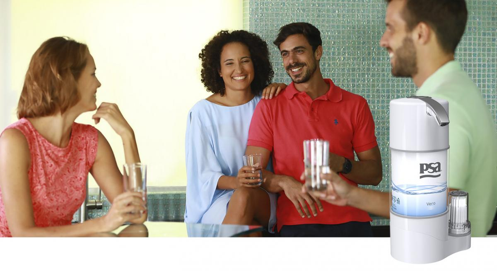Descripcion
¡Agua Purificada al mejor costo para vos y tu familia! Con la unidad PSA Vero disfrutá en tu hogar u oficina de agua purificada, limpia y realmente segura en el momento que desees y en la cantidad que necesites. Podés tomar la mejor calidad de agua por muy pocos centavos. No gastés más en agua embotellada o en bidones y olvidate de cargar esos incómodos envases.
PSA ROPOT – OSMOSIS INVERSA
 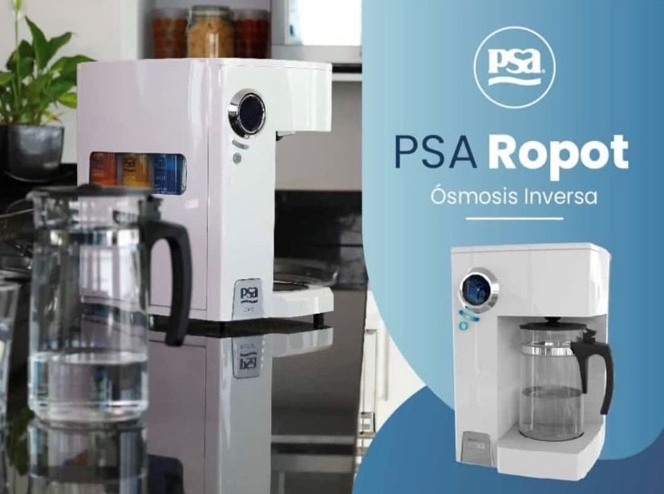
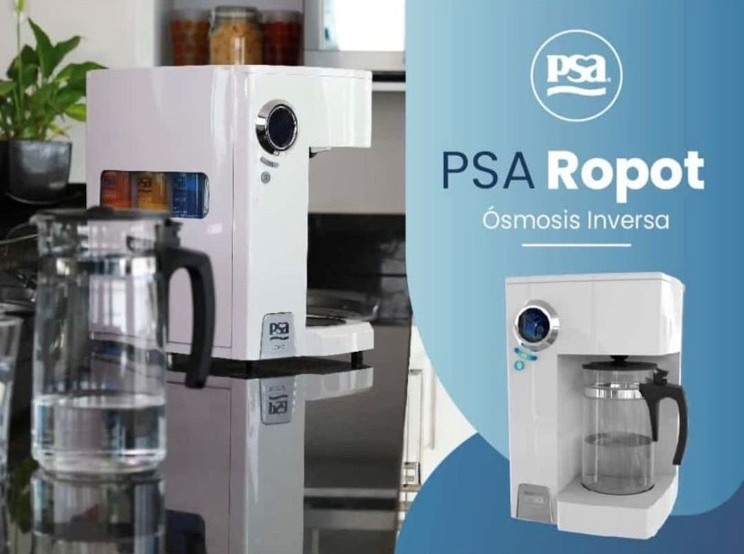
Descripcion
PSA Ropot purifica por ósmosis inversa, reduce más de un contaminante a la vez y trata todas las problemáticas del agua potable corriente de red. Este equipo se convertirá en un aliado para mejorar la calidad del agua que ingerís, ya que sus medios activos reducen cloro, trihalometanos (THM), arsénico, flúor, nitratos, cloruros, cobre, dureza, hierro, plomo, cromo, sulfatos y aluminio. Es el primer y único purificador por ósmosis inversa sobre mesada con aprobación de la ANMAT. Como no requiere instalación ni conexión hidráulica, podrás transportar tu PSA Ropot de un ambiente al otro con facilidad.
PSA S•1000 II BLACK
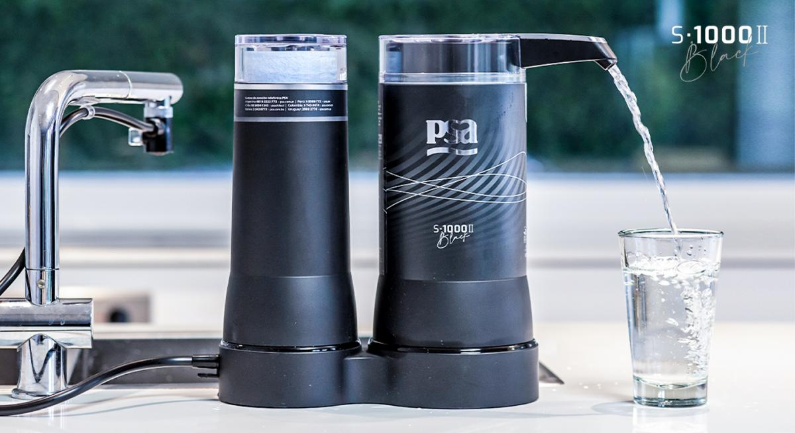Descripcion
PSA S•1000 II Black es un purificador que combina tecnología, estética y mayor poder de purificación. Nuevo color y diseño Cartucho bacteriostático que impide la reproducción de bacterias. Autorizadopor la ANMAT.
PSA SENIK
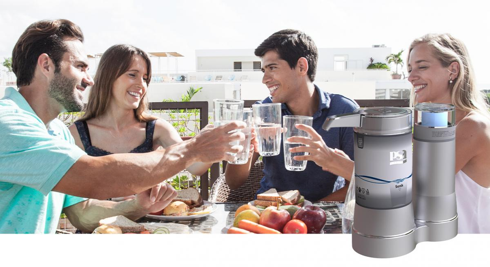Descripcion
PSA Senik es el primer purificador para el tratamiento de agua con arsénico autorizado por ANMAT (dependiente del Ministerio de Salud de la República Argentina) Pico que brinda comodidad para el llenado de botellas. Cartucho bacteriostático que impide la reproducción de bacterias.
PSA QUANTUM
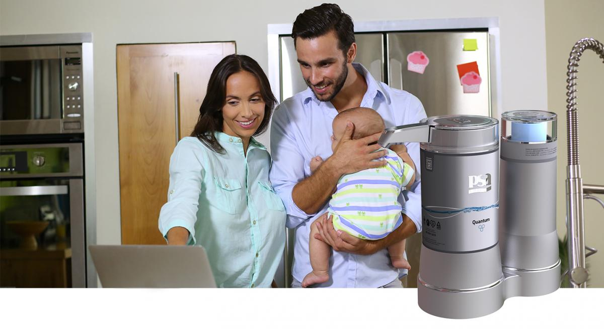Descripcion
El PSA Quantum te brinda agua libre de cloro y contaminantes orgánicos. Además, reduce la dureza del agua mediante intercambio catiónico. Diseño renovado, formato más cómodo y práctico. Pico más cómodo para el llenado de botellas. Cartucho bacteriostático que impide la reproducción de bacterias. Autorizadopor la ANMAT
PSA MINI
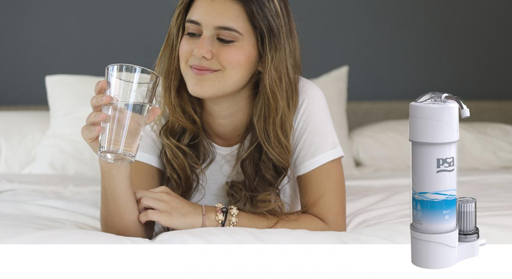Descripcion
Con PSA Mini brindale a tu familia salud y la seguridad de contar con la mejor calidad de agua para beber o cocinar, sin tener que cargar con botellas o incómodos bidones. Además, el precio por litro de agua purificada es mucho más bajo que el costo del agua embotellada. ¡Cuidátubolsillo!!
PSA P1 PORTATIL
Descripcion
La unidad PSA Portátil te permitirá tener agua purificada PSA estés donde estés con solo abrir una canilla de agua corriente. Debido a su practicidad, podrás llevar tu unidad al camping, al club o a donde vayas
PSA SODA BURBY
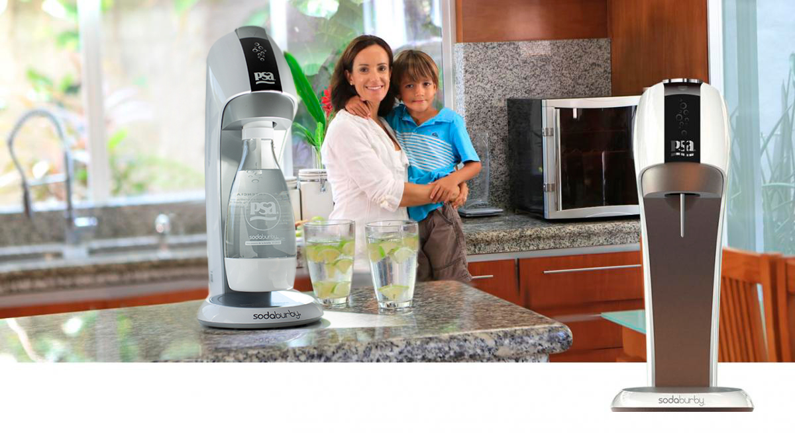 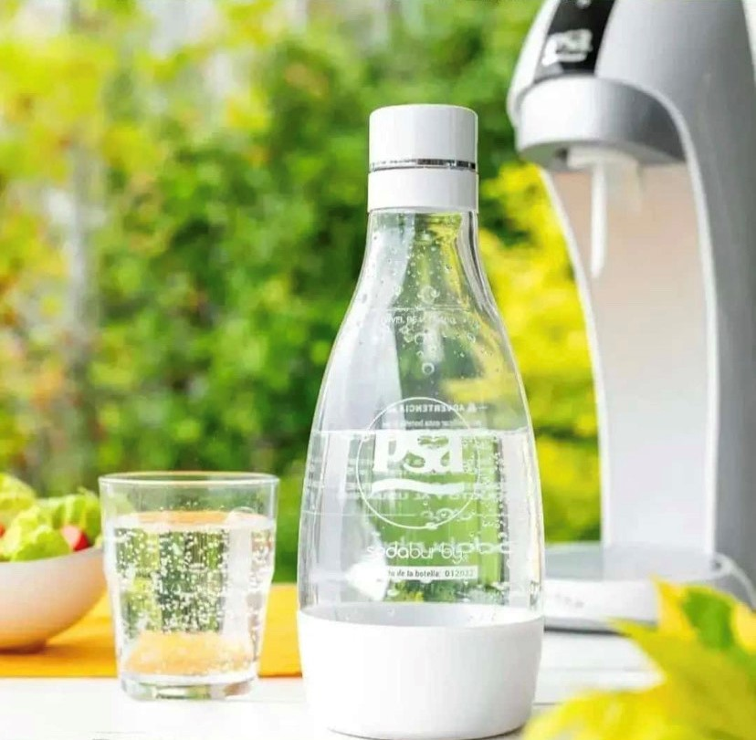Descripcion
Con el gasificador SodaBurby obtendrás agua refrescante y burbujeante a toda hora y en cualquier lugar. Ideal para reuniones con amigos, cumpleaños y comidas en familia
NUEVO - PSA ECO-D SOBRE MESADA
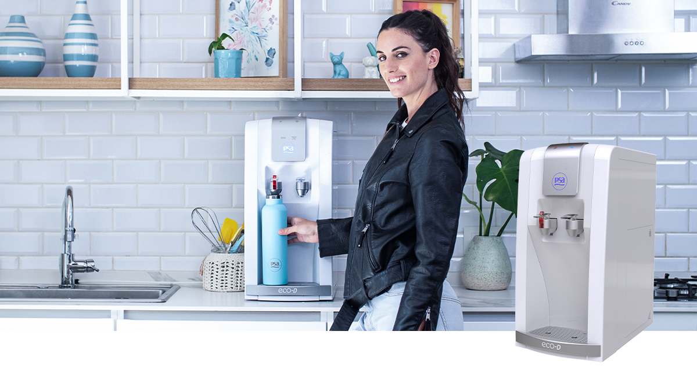 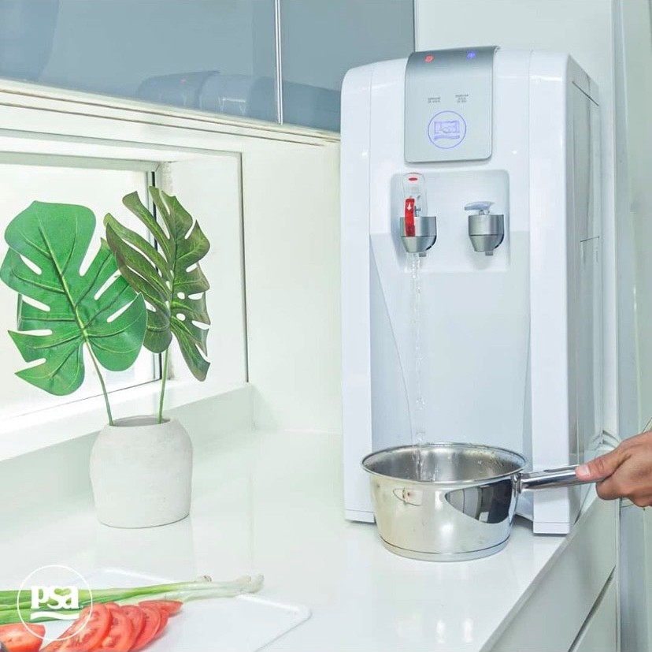Descripcion
El PSA eco-D Sobre Mesada es agua purificada fría o caliente para beber y cocinar al instante. Es ideal para instalar en tu cocina, ya que su tamaño compacto y su fácil instalación te permiten ubicarlo en cualquier lugar de la mesada. Además, es muy fácil de usar y podés sacar más de 2 litros de agua purificada fría o caliente en forma continua. Su bandeja inferior es removible, facilitando así el llenado de termos y cacerolas.
PSA ECO – D
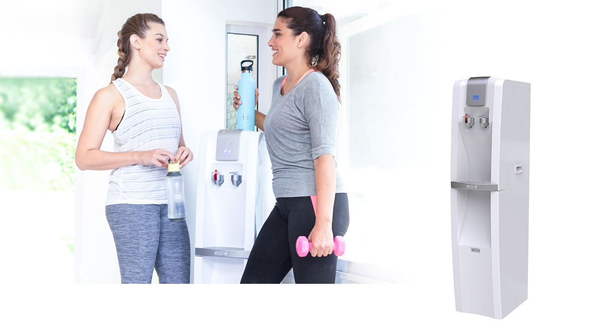Descripcion
El PSA eco-D es agua purificada fría o caliente para beber y cocinar al instante. Cómodo y muy fácil de usar. Podés sacar más de 2 litros de agua purificada fría o caliente en forma continua. Además, según la problemática de agua que tengas, podés elegir el equipo purificador en su interior (podrás optar por un equipo de la línea S•1000 II o el Senior 4)
Linea baños
PSA DUCHA II PLATA
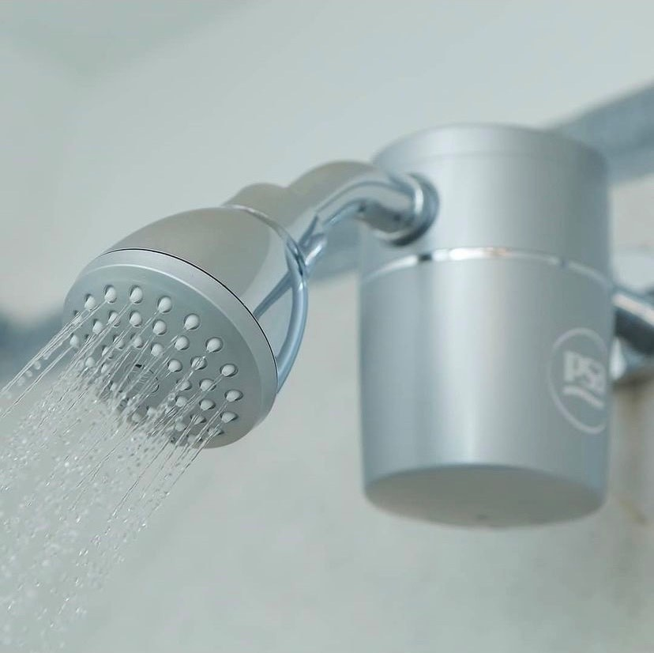 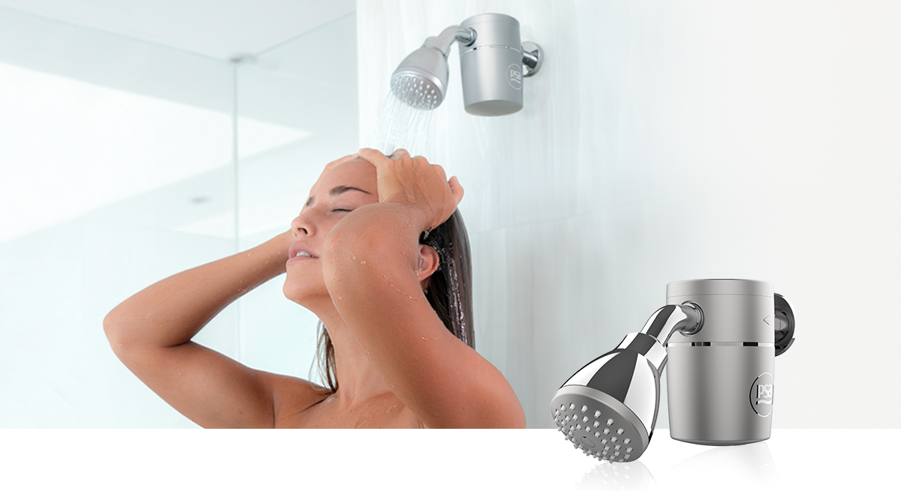Descripcion
El PSA Ducha II te permitirá disfrutar de un tonificante baño con toda el agua que desees, pero libre de los peligros del cloro y de los inconvenientes del agua dura y turbia.
Suaviza el agua y protege tu cabello y piel.
Remuevesustancialmente el cloro.
Disminuye metales pesados y sólidos en suspensión.
Reduce incrustaciones duras, como el sarro.
¡El agua purificada también llegó a tu ducha!
PSA C3 PLATAECO – D
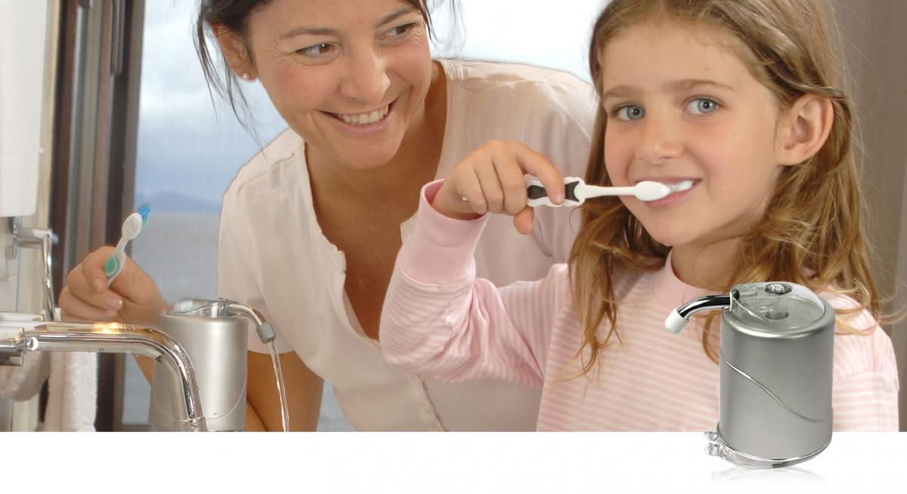Descripcion
Higiene bucal. Podés usar un buen dentífrico o el mejor enjuague bucal, pero ¿el agua es de similar calidad? Cepillate los dientes o enjuagate la boca con agua segura y confiable directo del PSA C3.
Limpieza de cutis. Si no confiás en el agua del baño, por su olor o aspecto, con PSA C3 podés lavarte la cara, desmaquillarte o afeitarte con agua clara y libre de impurezas.
Agua para beber.Tomá agua fresca y recién purificada desde la canilla de tu cuarto de baño cuantas veces quieras con total confianza
Linea piscina
PSA IONTRIX 2
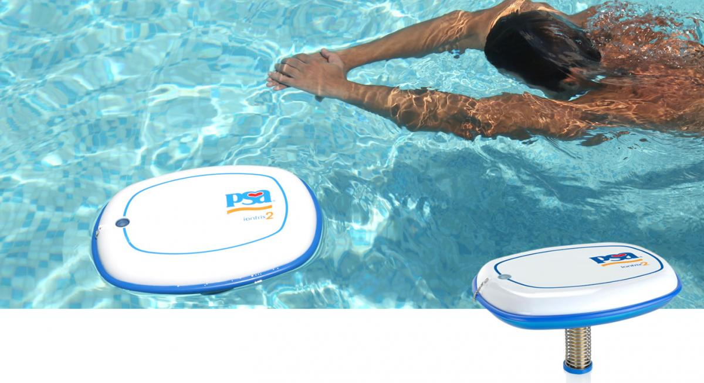.jpg)
Descripcion
PSA Iontrix te permite disfrutar de agua cristalina y segura en tu piscina, sin los riesgos y costos que trae aparejado el uso intensivo de productos químicos. Además de reducir la formación de algas, hongos y bacterias en el agua, también elimina los efectos desagradables y perjudiciales del cloro:
Ardor enlosojos
Sequedad en la piel y el pelo
Decoloración de los trajes de baño
¡Vas a disfrutar de agua limpia y segura en tu piscina las 24 horas del día!
Mate y botellas
MATE VASO TERMICO
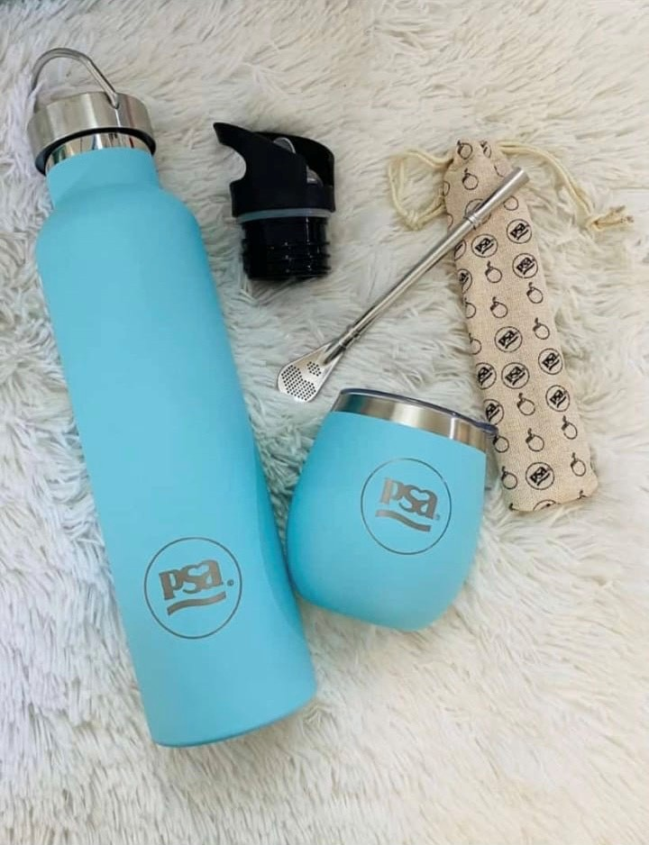Descripcion
Tiene doble función: podés usarlo como mate o como vaso térmico y llevarlo a todos lados. Además, incluye bombilla de acero.
Botellas
Descripcion
PSA Senior 4 es la evolución en tu cocina: agua purificada y segura para beber, cocinar y lavar alimentos. Estética totalmente renovada, con tamaño más compacto y el nuevo Fipor® n°.3, con mayor superficie filtrante. Más sustentable: estuche compostable, caja de accesorios y Kit Posventa en cartón reciclable. Línea Senior 4 autorizada por la ANMAT, perteneciente al Ministerio de Salud de la Nación Argentina
Purificador de Aire
PURIFICADOR DE AIRE PSA
Descripcion
El Purificador de Aire PSA mejora la calidad del aire que respirás, disminuye el riesgo de contraer enfermedades y reduce olores indeseados, como los del cigarrillo, humedad, frituras y mascotas. Gracias a su innovador sistema de tratamiento, provee aire limpio y libre de contaminantes en tu hogar. ¡Respirá profundo, respirá PSA!